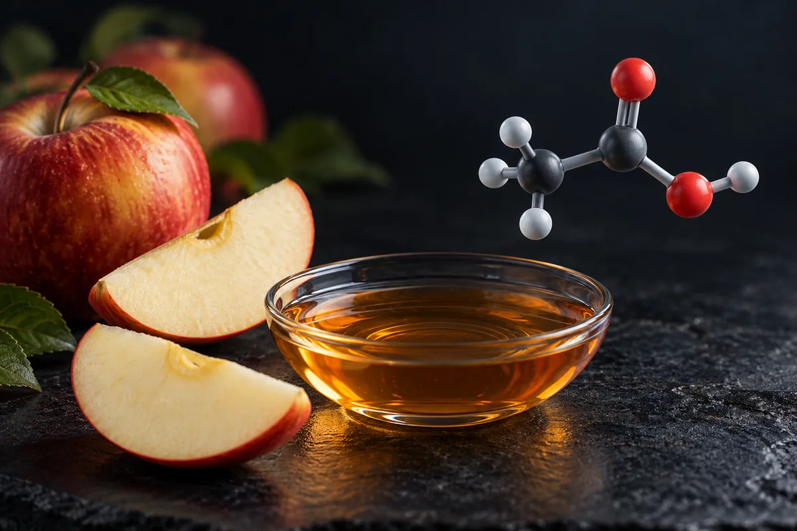

Vinagre de maçã em jejum
O vinagre baixa um pouco o pico de glicose depois de uma refeição; o ensaio que prometia grande perda de peso foi retratado em 2025, e parte da saciedade vem de náusea.

Material experimental. Leia antes de usar qualquer coisa daqui.
Nada nesta página é recomendação médica, prescrição ou plano de tratamento. É uma tradução organizada de protocolos que circulam em comunidades de pesquisa e, quando existe, do que ensaios publicados testaram. As duas coisas estão marcadas de forma diferente — e não são equivalentes.
A maior parte dos compostos aqui não tem aprovação da ANVISA nem da FDA para uso humano. Vários são vendidos com rótulo de "uso exclusivo em pesquisa", o que significa que não passaram por controle de pureza, esterilidade ou dosagem para consumo por pessoas. Dose descrita por comunidade não é dose validada: é o que alguém relatou ter feito.
Converse com um profissional de saúde habilitado antes de considerar qualquer um destes compostos. Se você já usa algum e sentir algo fora do previsto, procure atendimento — não espere o próximo exame de rotina.
Resumo
O vinagre de maçã é ácido acético diluído. Tomado junto com uma refeição de carboidrato, ele reduz o pico de glicose e de insulina, segundo uma meta-análise de ensaios; em diabéticos tipo 2, várias meta-análises acham glicemia de jejum menor. Em peso, o efeito é pequeno: uma meta-análise de 2021 não achou mudança no IMC, e a de 2025, que achou queda, incluiu um ensaio libanês retratado em 2025. A sensação de fome menor foi atribuída, num estudo, sobretudo à náusea. Nenhum estudo humano mediu "insulina ultrassensível" que mande nutrientes para o músculo, nem ganho de músculo. O vinagre também atrasa o esvaziamento do estômago, o que pode atrapalhar quem tem gastroparesia diabética.
Por que esta página existe
O vinagre de maçã aparece descrito num vídeo curto sobre treino que vi publicado na internet, como um hábito de 30 dias: uma colher em jejum, todo dia. O vídeo divide o mês em fases. Na primeira semana, o vinagre "otimizaria a pepsina" e acabaria com o estômago estufado depois de comer carne. Da segunda semana em diante, "bloquearia parte da absorção de amido", e haveria "zero pico de açúcar" e "zero queda de energia". Da terceira semana em diante, o estômago esvaziaria mais devagar, a fome "despencaria", e a insulina ficaria "ultrassensível", mandando carboidrato e aminoácido "direto para o tecido muscular, em vez de virar tecido adiposo". O mecanismo seria a ativação de uma enzima, a AMPK, que pararia a produção de gordura e aumentaria a queima. O resultado seria um déficit calórico espontâneo e o "cenário metabólico perfeito para reconstruir fibra muscular".
É um vídeo só, e o tema é um hábito com alimento, não um suplemento. Por isso a página segue o formato de hábito: em vez de tabela de dose, há uma tabela do que foi dado em cada estudo. Separei 12 alegações verificáveis. Nenhum número desta página veio da fonte secundária do site.
Este site trata de assunto vizinho também em Jejum de 24 horas e jejum intermitente de 16 horas (GH, autofagia e testosterona).
Quanta evidência existe, de verdade
Os números abaixo foram levantados por mim em 16 de outubro de 2026, no PubMed e no ClinicalTrials.gov. A consulta de cada linha está ao lado do número, para qualquer pessoa repetir e me contradizer.
| Base | Consulta | Resultado |
|---|---|---|
| PubMed | vinegar[Title/Abstract] | 3.467 artigos |
| PubMed | ("apple cider vinegar"[Title/Abstract] OR "apple vinegar"[Title/Abstract]) | 256 artigos |
| PubMed | (vinegar[Title/Abstract]) AND (Randomized Controlled Trial[Publication Type] OR Meta-Analysis[Publication Type]) | 68 artigos |
| PubMed | (vinegar[Title/Abstract]) AND (postprandial[Title/Abstract] OR glycemic[Title/Abstract] OR glycaemic[Title/Abstract] OR glucose[Title/Abstract]) AND (Randomized Controlled Trial[Publication Type] OR Meta-Analysis[Publication Type]) | 27 artigos |
| PubMed | (vinegar[Title/Abstract]) AND (body weight[Title/Abstract] OR obesity[Title/Abstract] OR weight loss[Title/Abstract] OR obese[Title/Abstract]) AND (Randomized Controlled Trial[Publication Type]) | 2 artigos |
| PubMed | (vinegar[Title/Abstract]) AND (pepsin[Title/Abstract]) | 7 artigos |
| PubMed | (vinegar[Title/Abstract]) AND ("muscle protein synthesis"[Title/Abstract] OR "muscle mass"[Title/Abstract] OR "lean mass"[Title/Abstract] OR "lean body mass"[Title/Abstract]) | 0 artigos |
| PubMed | vinegar (sem restrição de campo) | 69.138 artigos |
| ClinicalTrials.gov | intervenção: apple cider vinegar | 20 estudos registrados |
| ClinicalTrials.gov | intervenção: (vinegar) AND AREA[Phase]PHASE3 | 45 ensaios de fase 3 |
Leitura honesta desses números
- A busca sem campo engana. Sem restringir a título e resumo, o PubMed troca "vinegar" por "ácido acético" e devolve 69.138 artigos, a maioria de química, de exame do colo do útero com ácido acético e de laboratório. Restrita a título e resumo, a contagem cai para 3.467.
- O mesmo acontece no ClinicalTrials.gov. Os 45 "fase 3" com vinagre são, nos 12 primeiros que listei, de remédios cujo nome tem "acetato" (lapaquistate, zinco), de rastreio de câncer do colo do útero com ácido acético e de cromoendoscopia. Nenhum é de vinagre de maçã para peso ou glicose. Por isso a contagem útil é a de "apple cider vinegar": 20 registros, nenhum de fase 3.
- Peso: só 2 artigos marcados como ensaio randomizado com vinagre e obesidade no título ou resumo. Um é o estudo japonês de 2009. O outro deu a 30 diabéticos mal controlados um xarope de vinagre de uva com lactulose, com ou sem extrato de alcaparra, por 3 meses; no grupo que tomou só o xarope de vinagre, a glicose continuou subindo, como no placebo. O ensaio libanês de 2024 não aparece nessa busca porque o PubMed o marca hoje como publicação retratada.
- Músculo: zero. Nenhum artigo junta vinagre e massa muscular no título ou no resumo.
- Pepsina: os 7 artigos são de laboratório ou revisão (digestão simulada, colágeno, vinagres de vinho, bactérias). No único que mediu o efeito do vinagre na digestão de proteína, ele inibiu a pepsina.
- Contagem de artigo mede atenção acadêmica, não evidência de desfecho.
Os estudos que sustentam as alegações
Segundo o PubMed, estes são os trabalhos concretos por trás do que se diz sobre vinagre, glicose, fome e peso. Leia o que cada um mediu, e em quantos.
| Estudo | N | Contexto | O que relatou | Ressalva |
|---|---|---|---|---|
| Shishehbor et al., 2017 (meta-análise) Diabetes Res Clin Pract 127:1-9 · PMID 28292654 | ensaios controlados | Vinagre junto com refeição | Área da glicose (diferença padronizada −0,60; IC 95% −1,08 a −0,11) e da insulina (−1,30; IC −1,98 a −0,62) menores depois da refeição | Efeito na resposta à refeição, não em jejum |
| Östman et al., 2005 Eur J Clin Nutr 59(9):983-8 · PMID 16015276 | 12 | Saudáveis; pão branco com 18, 23 ou 28 mmol de ácido acético | Glicose e insulina mais baixas aos 30 min, quanto mais vinagre; saciedade maior | Uma refeição; aos 120 min, o índice glicêmico não diferiu da refeição sem vinagre |
| Darzi et al., 2014 Int J Obes 38(5):675-81 · PMID 23979220 | 16 e 14 | Saudáveis; vinagre em bebida agradável ou desagradável com café da manhã; e só o gosto, sem engolir | Apetite menor ao engolir vinagre, com náusea maior; só o gosto não mudou o apetite | Os autores concluem que o efeito vem em grande parte da má tolerância e que promover vinagre como inibidor de apetite "não parece apropriado" |
| Hlebowicz et al., 2007 BMC Gastroenterol 7:46 · PMID 18093343 | 10 | Diabetes tipo 1 com gastroparesia; 30 mL de vinagre de maçã em água antes do café, 2 semanas | Esvaziamento do estômago mais lento: mediana de 27% sem vinagre e 17% com vinagre (p < 0,05) | Os autores alertam que isso pode piorar o controle da glicose nesses pacientes |
| Kondo et al., 2009 Biosci Biotechnol Biochem 73(8):1837-43 · PMID 19661687 | três grupos (N não informado no resumo) | Japoneses obesos; bebida com 15 mL (750 mg de ácido acético), 30 mL (1.500 mg) ou 0 mL de vinagre, 12 semanas | Peso, IMC, gordura visceral, cintura e triglicerídeos menores nos dois grupos de vinagre que no placebo | O primeiro autor é de centro de pesquisa de um fabricante de vinagre; o resumo não dá o tamanho da perda |
| Abou-Khalil et al., 2024 — retratado BMJ Nutr Prev Health 7(1):61-67 · PMID 38966098 | 120 | Adolescentes e jovens adultos libaneses com sobrepeso ou obesidade; 5, 10 ou 15 mL, 12 semanas | Publicou queda de peso, IMC, glicose e lipídios | Retratado em 2025 (aviso de retratação: PMID 41789013); antes disso, os autores publicaram um esclarecimento sobre "preocupações estatísticas e de dados"; não usar como evidência |
| Valdes et al., 2021 (meta-análise) J Acad Nutr Diet 121(5):895-914 · PMID 33436350 | 16 estudos, 910 participantes | Ácido acético na dieta, de 750 a 3.600 mg/dia, média de 8 semanas | Triglicerídeos menores em quem tem sobrepeso e em diabéticos; glicemia de jejum −35,73 mg/dL em diabéticos; sem efeito no IMC nem na gordura corporal | A maioria dos estudos com risco de viés incerto ou alto, como declarado |
| Castagna et al., 2025 (meta-análise) Nutrients 17(18):3000 · PMID 41010525 | 10 ensaios, 789 participantes | Vinagre de maçã por 4 semanas ou mais em sobrepeso ou diabetes tipo 2 | Peso (diferença padronizada −0,39) e IMC menores | Incluiu o ensaio libanês retratado, classificado como de baixo risco de viés |
| Hadi et al., 2021 (meta-análise) BMC Complement Med Ther 21(1):179 · PMID 34187442 | 9 estudos | Vinagre de maçã por 2 semanas ou mais | Glicemia de jejum −7,97 mg/dL e colesterol total menores; insulina de jejum e HOMA-IR sem mudança | Em saudáveis, a glicemia de jejum pareceu subir |
| Arjmandfard et al., 2025 (meta-análise) Front Nutr 12:1528383 · PMID 39949546 | 7 estudos | Diabetes tipo 2 | Glicemia de jejum −21,929 mg/dL, HbA1c −1,53; insulina +2,059 µU/mL; HOMA-IR sem mudança | Só diabéticos |
| Urbinati et al., 2021 (in vitro) Foods 10(2):411 · PMID 33673211 | — | Digestão simulada de queijo, carne curada e batata com vinagre balsâmico | O vinagre inibiu a pepsina na fase gástrica | Laboratório; vinagre balsâmico, não de maçã |
| Maruta et al., 2016 (in vitro) PLoS One 11(6):e0158055 · PMID 27348124 | — | Células musculares L6 e, em trabalho anterior do grupo, ratos obesos | Ácido acético ativou a AMPK e aumentou a captação de glicose e gordura nas células | Célula e rato |
Doses e exposições usadas em estudos humanos publicados
Isto não é recomendação de dose: é o registro do que foi administrado em estudos publicados, com a finalidade de cada um. Fora do contexto do estudo, esses números não se transferem.
| Estudo | Quanto | Por quanto tempo, e quando | Em quem |
|---|---|---|---|
| Kondo et al., 2009 | 15 mL ou 30 mL de vinagre (750 ou 1.500 mg de ácido acético) numa bebida de 500 mL | 12 semanas | Japoneses obesos |
| Östman et al., 2005 | 18, 23 ou 28 mmol de ácido acético com pão branco | Uma refeição | 12 saudáveis |
| Hlebowicz et al., 2007 | 30 mL de vinagre de maçã em 200 mL de água, antes do café da manhã | 2 semanas | 10 com diabetes tipo 1 e gastroparesia |
| Valdes et al., 2021 (faixa dos estudos) | 750 a 3.600 mg/dia de ácido acético | Média de 8 semanas | 910 adultos em 16 estudos |
| Castagna et al., 2025 (subgrupo) | 30 mL/dia | Até 12 semanas | Sobrepeso, obesidade ou diabetes tipo 2 |
Quase todos os estudos deram o vinagre junto com uma refeição. Nenhum dos que li comparou "em jejum" com "junto da refeição", e é junto da refeição que o efeito no pico de glicose foi medido.
Das 12 alegações, só uma se confirma inteira, e é a que pode atrapalhar quem tem gastroparesia
Cada linha é uma alegação como ela circula, sem o nome de quem a fez. O veredito usa seis rótulos: confirmado, parcialmente, não sustentado, sem estudo em humanos, só animal ou in vitro e número não encontrado na fonte citada.
| O que se diz | O que os estudos mostram | Veredito |
|---|---|---|
| Uma colher em jejum por 30 dias tem "efeitos potentes" | Os ensaios usaram 15 a 30 mL/dia por 8 a 12 semanas, quase sempre com refeição; o efeito em glicemia de jejum aparece sobretudo em diabéticos, e no peso é pequeno ou nulo | Parcialmente |
| Na primeira semana, "otimiza a pepsina" | Não achei estudo humano; o único estudo de laboratório que mediu viu o vinagre inibir a pepsina | Não sustentado |
| O estufamento depois de comer carne "some" | Nenhum estudo localizado mediu isso | Sem estudo em humanos |
| Bloqueia parte da absorção do amido, e a glicose entra devagar | A glicose e a insulina sobem menos depois de uma refeição com vinagre (meta-análise de 2017; Östman 2005); o "bloqueio de amido" não foi medido diretamente nesses estudos | Parcialmente |
| "Zero pico de açúcar" e "zero queda de energia" | O pico diminui, não zera; energia não foi medida | Não sustentado |
| O esvaziamento do estômago fica mais lento | 30 mL/dia deixaram o esvaziamento mais lento em diabéticos tipo 1 com gastroparesia (Hlebowicz 2007) | Confirmado (e é um risco para esse grupo) |
| A fome "despenca" e a vontade de doce diminui | A saciedade aumenta com vinagre (Östman 2005), mas num estudo isso veio junto com náusea e sumiu quando a pessoa só sentiu o gosto (Darzi 2014); vontade de doce não foi medida | Parcialmente |
| A insulina fica "ultrassensível" e manda carboidrato e aminoácido para o músculo, não para a gordura | As meta-análises não acharam mudança na insulina de jejum nem no HOMA-IR; nenhum estudo mediu para onde os nutrientes vão | Não sustentado |
| O ácido acético ativa a AMPK, para a produção de gordura e aumenta a queima | Visto em células musculares e em ratos (Maruta 2016) | Só animal ou in vitro |
| Déficit calórico espontâneo e queima da gordura estocada | Um ensaio japonês, com autor de fabricante de vinagre, viu menos peso e gordura visceral; uma meta-análise de 2021 não achou efeito no IMC; a de 2025 achou, mas incluiu um ensaio retratado | Parcialmente |
| Cria o "cenário perfeito para reconstruir fibra muscular" | Zero artigos de vinagre e massa muscular no PubMed | Sem estudo em humanos |
| Faz parte de um protocolo para "explodir a testosterona" | Nenhum ensaio humano de vinagre mediu testosterona | Sem estudo em humanos |
Placar: 1 confirmada, 4 parcialmente, 3 não sustentadas, 3 sem estudo em humanos e 1 só animal ou in vitro.
Segurança e quem não deve fazer sem orientação
- Dentes. Em laboratório, alguns vinagres tiraram cerca de 20% dos minerais das camadas superficiais do esmalte em 4 a 8 horas de contato (Willershausen 2014). Há um relato, numa revista holandesa, de erosão nos dentes de uma adolescente que tomava um copo de vinagre de maçã por dia para emagrecer (Gambon 2012).
- Esôfago. Um relato de lesão no esôfago com comprimido de vinagre de maçã levou os autores a testar 8 marcas de comprimido: pH, ácido e rótulo variavam muito, e havia dúvida se havia vinagre de maçã nos produtos (Hill 2005).
- Potássio. Há relato de potássio baixo, alteração hormonal e osteoporose numa pessoa que tomava grandes quantidades de vinagre de maçã (Lhotta 1998). O artigo é uma carta, sem resumo; li só o título e os dados do PubMed.
- Fígado. Um relato de 2025 descreve dano ao fígado num homem de 60 anos com longo uso de vinagre, que melhorou ao parar.
- Gastroparesia. Em diabéticos tipo 1 com estômago lento, o vinagre deixou o esvaziamento ainda mais lento, e os autores veem nisso uma desvantagem para o controle da glicose.
- Remédio para diabetes e diurético. Somar vinagre a remédio que baixa glicose, ou a diurético que baixa potássio, é risco que eu infiro dos estudos acima; não achei estudo que tenha medido essas combinações.
- No conjunto, a revisão sistemática de 2020 (Launholt) conclui que o risco parece desprezível em quantidades e formas recomendadas, mas que a evidência sobre benefício é insuficiente.
Status regulatório
- Brasil, alimento: vinagre é alimento. Segundo notícia de 4 de abril de 2012, o Ministério da Agricultura publicou naquele dia a Instrução Normativa nº 6, com o padrão de identidade e qualidade dos fermentados acéticos. NÃO VERIFIQUEI o texto oficial nem os limites que ele fixa.
- Brasil, suplemento alimentar: a IN 28/2018 consolidada, até a IN 470, de 16 de setembro de 2026, não lista vinagre nem ácido acético como constituinte (busca sem acento por "vinagre" e "acido acetico": zero ocorrências).
- Brasil, medicamento: no dado aberto da ANVISA, "vinagre" não aparece; "ácido acético" aparece só como componente de soluções de hemodiálise e de um antiemético inativo (tabela abaixo).
- Estados Unidos e União Europeia: NÃO VERIFIQUEI.
- WADA: não se aplica.
No Brasil, busquei no dado aberto de medicamentos registrados da ANVISA, no princípio ativo e no nome do produto, sem acento e sem diferença de caixa.
| Princípio ativo | Padrão buscado | Registros ativos | Classe terapêutica declarada | Produtos |
|---|---|---|---|---|
| vinagre | vinagre | 0 | — | nenhum produto |
| ácido acético | acido acetico | 111 | Produtos para hemodiálise | soluções de hemodiálise; um antiemético inativo que lista ácido acético entre os componentes |
O que este levantamento não fez
- Li resumos, não os artigos inteiros, com exceção da meta-análise de 2025, que abri para ver se incluía o ensaio retratado.
- Não li o texto oficial da IN MAPA nº 6/2012; a referência vem de notícia da época.
- Não li a carta de 1998 sobre potássio baixo, que não tem resumo no PubMed.
- Não li o motivo detalhado da retratação do ensaio libanês; registrei o aviso de retratação e o texto de esclarecimento dos autores, que o precede.
- Não conferi quanto ácido acético tem uma colher de vinagre de maçã vendido no Brasil.
- Não avaliei os ensaios em diabetes tipo 2 um a um.
- Não conferi a situação nos Estados Unidos e na União Europeia.
Referências
- Shishehbor F, Mansoori A, Shirani F. Vinegar consumption can attenuate postprandial glucose and insulin responses; a systematic review and meta-analysis of clinical trials. Diabetes Res Clin Pract. 2017;127:1-9. PMID 28292654 — picos de glicose e insulina menores depois da refeição.
- Ostman E, Granfeldt Y, Persson L, Björck I. Vinegar supplementation lowers glucose and insulin responses and increases satiety after a bread meal in healthy subjects. Eur J Clin Nutr. 2005;59(9):983-8. PMID 16015276 — efeito por dose numa refeição; saciedade maior.
- Darzi J, Frost GS, Montaser R, et al. Influence of the tolerability of vinegar as an oral source of short-chain fatty acids on appetite control and food intake. Int J Obes (Lond). 2014;38(5):675-81. PMID 23979220 — apetite menor junto com náusea.
- Hlebowicz J, Darwiche G, Björgell O, Almér LO. Effect of apple cider vinegar on delayed gastric emptying in patients with type 1 diabetes mellitus: a pilot study. BMC Gastroenterol. 2007;7:46. PMID 18093343 — esvaziamento do estômago mais lento em gastroparesia.
- Kondo T, Kishi M, Fushimi T, et al. Vinegar intake reduces body weight, body fat mass, and serum triglyceride levels in obese Japanese subjects. Biosci Biotechnol Biochem. 2009;73(8):1837-43. PMID 19661687 — o ensaio japonês de 12 semanas.
- Abou-Khalil R, Andary J, El-Hayek E. Apple cider vinegar for weight management in Lebanese adolescents and young adults with overweight and obesity: a randomised, double-blind, placebo-controlled study. BMJ Nutr Prev Health. 2024;7(1):61-67. PMID 38966098 — ensaio retratado; citado só para registrar a retratação.
- Retraction: Apple cider vinegar for weight management in lebanese adolescents and young adults with overweight and obesity. BMJ Nutr Prev Health. 2025;8(2):693. PMID 41789013 — o aviso de retratação.
- Abou-Khalil R, El-Hayek E. Comprehensive clarification of statistical and data concerns on the effects of apple cider vinegar on weight loss. BMJ Nutr Prev Health. 2024;7(2):e001102. PMID 39882285 — a resposta dos autores aos questionamentos, antes da retratação.
- Valdes DS, So D, Gill PA, Kellow NJ. Effect of Dietary Acetic Acid Supplementation on Plasma Glucose, Lipid Profiles, and Body Mass Index in Human Adults: A Systematic Review and Meta-analysis. J Acad Nutr Diet. 2021;121(5):895-914. PMID 33436350 — sem efeito no IMC; glicemia menor em diabéticos.
- Castagna A, Ferro Y, Noto FR, et al. Effect of Apple Cider Vinegar Intake on Body Composition in Humans with Type 2 Diabetes and/or Overweight: A Systematic Review and Meta-Analysis of Randomized Controlled Trials. Nutrients. 2025;17(18):3000. PMID 41010525 — queda de peso pequena, com um ensaio retratado incluído.
- Hadi A, Pourmasoumi M, Najafgholizadeh A, et al. The effect of apple cider vinegar on lipid profiles and glycemic parameters: a systematic review and meta-analysis of randomized clinical trials. BMC Complement Med Ther. 2021;21(1):179. PMID 34187442 — insulina de jejum e HOMA-IR sem mudança.
- Arjmandfard D, Behzadi M, Sohrabi Z, Mohammadi Sartang M. Effects of apple cider vinegar on glycemic control and insulin sensitivity in patients with type 2 diabetes: A GRADE-assessed systematic review and dose-response meta-analysis of controlled clinical trials. Front Nutr. 2025;12:1528383. PMID 39949546 — glicemia de jejum e HbA1c menores em diabéticos.
- Urbinati E, Di Nunzio M, Picone G, et al. The Effect of Balsamic Vinegar Dressing on Protein and Carbohydrate Digestibility is Dependent on the Food Matrix. Foods. 2021;10(2):411. PMID 33673211 — vinagre inibiu a pepsina em digestão simulada.
- Maruta H, Yoshimura Y, Araki A, et al. Activation of AMP-Activated Protein Kinase and Stimulation of Energy Metabolism by Acetic Acid in L6 Myotube Cells. PLoS One. 2016;11(6):e0158055. PMID 27348124 — AMPK ativada em células.
- Launholt TL, Kristiansen CB, Hjorth P. Safety and side effects of apple vinegar intake and its effect on metabolic parameters and body weight: a systematic review. Eur J Nutr. 2020;59(6):2273-2289. PMID 32170375 — segurança e evidência insuficiente.
- Willershausen I, Weyer V, Schulte D, et al. In vitro study on dental erosion caused by different vinegar varieties using an electron microprobe. Clin Lab. 2014;60(5):783-90. PMID 24839821 — perda de minerais do esmalte em laboratório.
- Gambon DL, Brand HS, Veerman EC. [Unhealthy weight loss. Erosion by apple cider vinegar]. Ned Tijdschr Tandheelkd. 2012;119(12):589-91. PMID 23373303 — relato de erosão dentária.
- Hill LL, Woodruff LH, Foote JC, Barreto-Alcoba M. Esophageal injury by apple cider vinegar tablets and subsequent evaluation of products. J Am Diet Assoc. 2005;105(7):1141-4. PMID 15983536 — lesão no esôfago e comprimidos inconsistentes.
- Lhotta K, Höfle G, Gasser R, Finkenstedt G. Hypokalemia, hyperreninemia and osteoporosis in a patient ingesting large amounts of cider vinegar. Nephron. 1998;80(2):242-3. PMID 9736833 — relato de potássio baixo.
- Andonie CR, AbuGhannam SI, Ruzayqat SMA. Apple Cider Vinegar-Induced Hepatotoxicity: A Rare Case Report. Oxf Med Case Reports. 2025;2025(7):omaf097. PMID 40666072 — relato de dano ao fígado.
- Vahid H, Bonakdaran S, Khorasani ZM, et al. Effect of Capparis spinosa Extract on Metabolic Parameters in Patients with Type-2 Diabetes: A Randomized Controlled Trial. Endocr Metab Immune Disord Drug Targets. 2019;19(1):100-107. PMID 30657033 — xarope de vinagre de uva sem melhora da glicose em 30 diabéticos.
- Instrução Normativa nº 28, de 26 de julho de 2018, da ANVISA, texto consolidado no AnvisaLegis — sem vinagre nem ácido acético entre os constituintes de suplemento.
- Notícia "Mapa publica padrão de identidade e qualidade para vinagres", Revista Cultivar, 4 de abril de 2012 — a publicação da IN MAPA nº 6/2012.
- Dado aberto de medicamentos registrados da ANVISA — a mesma base usada na página O que existe no Brasil.
- E-utilities do PubMed (esearch) — a base de todas as contagens de artigo desta página.
- API pública do ClinicalTrials.gov, versão 2 — a base de todas as contagens de estudo e de fase 3 desta página.